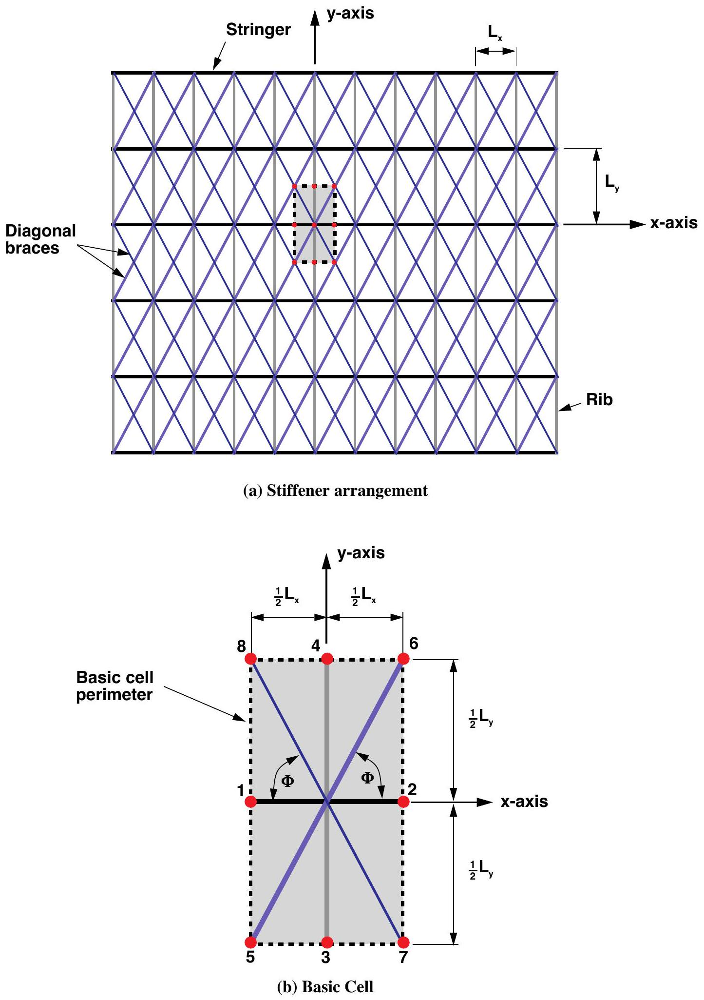
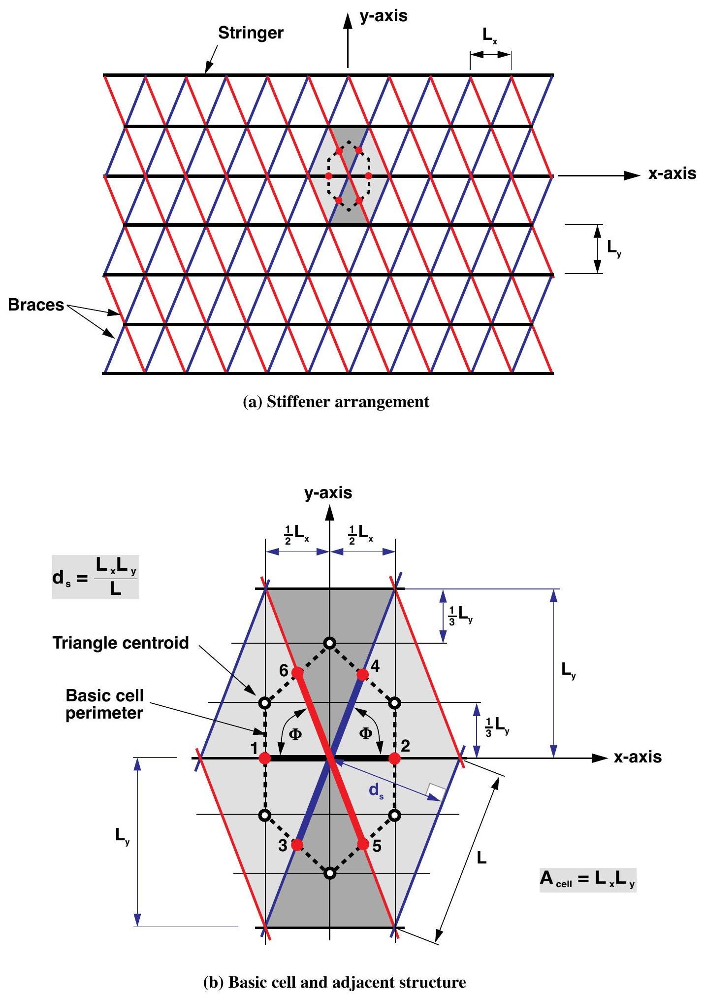
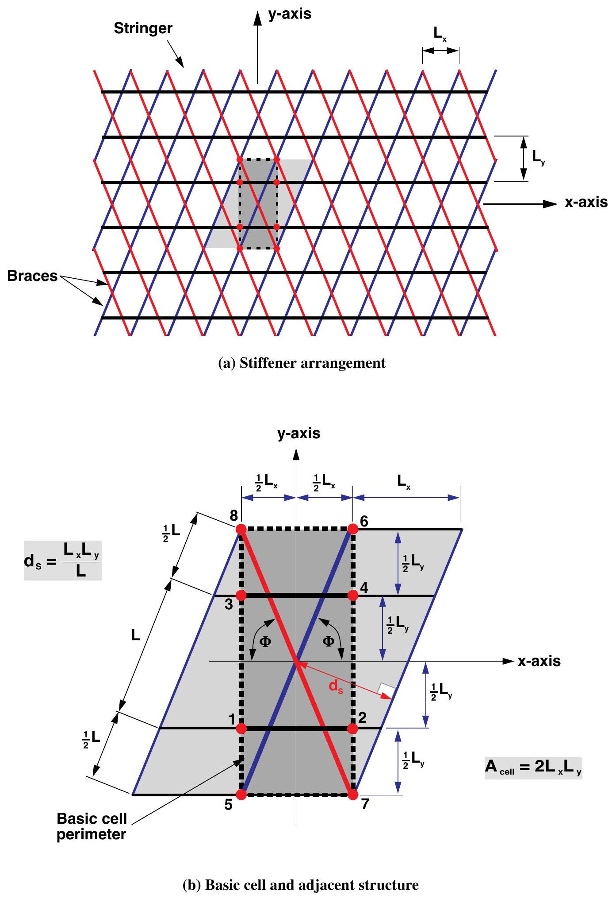
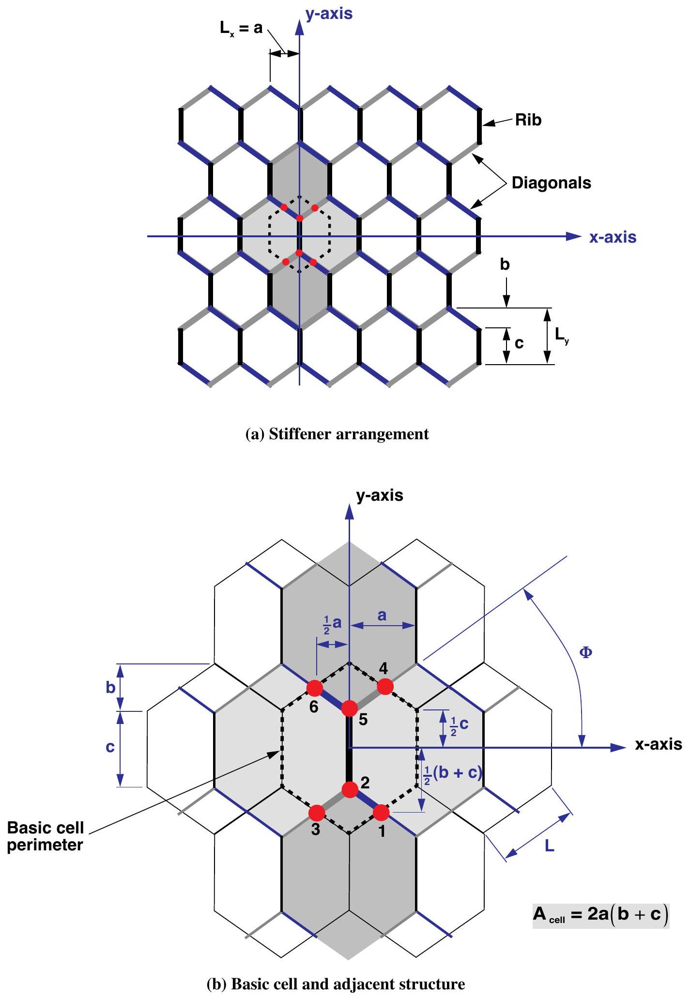
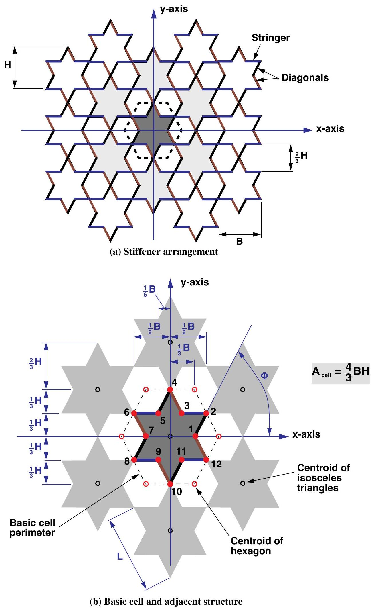

Nemeth Cell Verification
Eight named grid cases agree with a separately written calculation of Nemeth's stiffness equations to floating-point roundoff. The checks cover both the repeat geometry and every entry of the assembled stiffness blocks.
What Was Checked
The review covered two parts of every pattern:
- The shape: nodes, member connections, directions, repeat dimensions, and basic-cell area were checked against Nemeth's figures and tables.
- The stiffness: each named constructor was compared with a separate calculation written directly from Nemeth's table entries and equations.
Tensyl keeps those two jobs separate. cell.geometry holds the coordinates and
connections needed to draw the pattern. cell.members holds the member lengths
and counts used in the stiffness calculation. This distinction prevents a
shared edge from being counted twice simply because it appears on both sides of
a drawing.
How Cell Dimensions Are Named
e1_pitch and e2_pitch measure repeat dimensions along the panel axes.
The cell-building guide explains
spacing, angles, eccentricities, and shared-boundary accounting.
Available Patterns
The pattern gallery shows every named builder using its actual cell geometry, with a repeated layout beside one highlighted translation cell. The executable examples also check drawn and modeled rib density. The table below maps those builders to Nemeth's source definitions.
| Constructor | What the repeating pattern contains | Nemeth source |
|---|---|---|
unidirectional_cell |
One family of parallel members at any angle | Figures 4-6 |
orthogrid_cell |
Crossing e1 and e2 members |
Orthogonal-grid specialization |
braced_orthogrid_cell(diagonal_pattern="double") |
An orthogrid with both diagonals in each bay | Figure 14 and table 4 |
braced_orthogrid_cell(diagonal_pattern="single") |
An orthogrid with one alternating diagonal per bay | Figure 16 and table 5 |
diamond_cell |
e1 members and both diagonals, with no e2 members |
Figure 15 |
equilateral_isogrid_cell |
Equal members at 0, +60, and -60 degrees |
Equilateral limit of table 6 |
isosceles_triangle_grid_cell |
e1 members with two mirrored diagonals |
Figure 17 and table 6 |
kagome_cell |
Short e1 members joined by longer mirrored diagonals |
Figure 18 and table 7 |
hexagonal_grid_cell |
e2 members joined by mirrored diagonals |
Figure 21 and table 8 |
regular_hexagonal_grid_cell |
Equal members forming a regular hexagonal grid | Appendix F |
star_cell |
Four short members in each of three directions | Figure 23 and table 9 |
equilateral_star_cell |
Equal members forming an equilateral star grid | Appendix G |
sandwich_*_core_cell |
A named grid core between two shifted faces | Appendices H-J |
Representative source drawings:
| Pattern | Nemeth drawing |
|---|---|
| Braced orthogrid |  |
| Triangular |  |
| Kagome |  |
| Hexagonal |  |
| Star |  |
Source: Nemeth, NASA/TP-2011-216882, figures 14, 17, 18, 21, and 23.
Viewing Any Named Cell
Use cell.geometry.segments(...) to obtain the lines in repeated cells. The
following helper draws the custom orthogrid:
from matplotlib import pyplot as plt
def plot_cell(cell, *, repeat_a=2, repeat_b=2):
geometry = cell.geometry
if geometry is None:
raise ValueError("Supply a cell with drawable geometry.")
_, axes = plt.subplots()
for segment in geometry.segments(repeat_a=repeat_a, repeat_b=repeat_b):
axes.plot(
[segment.start_e1, segment.end_e1],
[segment.start_e2, segment.end_e2],
color="#176b87",
)
axes.set_aspect("equal")
axes.set_xlabel("e1 (m)")
axes.set_ylabel("e2 (m)")
return axes
The complete script supplies the cell and
writes its drawing. segment.family supplies a name for assigning colors;
repeat vectors and boundary nodes define the tiling and cell outline.
How the Numerical Check Works
The comparison is intentionally independent of the production calculation:
- Each test case gives different properties to the member families so that a swapped or missing family cannot hide behind symmetry.
- The reference calculation uses member lengths, directions, counts, sections, and offsets transcribed directly from Nemeth's tables.
- It calculates every
A,B,D, andAsentry without readingcell.membersor calling Tensyl's production member transformation. - The test compares every entry in the resulting stiffness matrices.
This check is sensitive to the mistakes that matter here: the wrong cell area, member count, angle, offset, shear factor, or coupling sign.
Results
The largest entry difference reports the biggest numerical gap anywhere in the matrix. The relative matrix difference compares the size of all differences with the size of the reference matrix. Its formal name is the relative Frobenius-norm error.
| Source case | Largest entry difference | Relative matrix difference |
|---|---|---|
| Table 4, crossed braced orthogrid | 1.137e-13 |
1.099e-19 |
| Table 5, alternating single brace | 2.842e-14 |
3.658e-20 |
| Figure 15, diamond | 4.547e-13 |
1.595e-16 |
| Table 6, equilateral limit | 6.821e-13 |
3.780e-16 |
| Table 6, isosceles triangle | 4.547e-13 |
2.071e-16 |
| Table 7, Kagome | 4.547e-13 |
2.071e-16 |
| Table 8, hexagonal | 5.684e-14 |
1.573e-16 |
| Table 9, star | 4.547e-13 |
2.434e-16 |
These are retained source-check results. The independent reference is in
validation/lib/tensyl_validation/nemeth.py;
current regression checks run with uv run pytest -q tests -k nemeth.
What This Result Means
The comparison supports the following claims:
- Tensyl represents the cited Nemeth cell shapes and repeat areas correctly.
- The production stiffness calculation agrees with a separately written source calculation for the tested cases.
- The corrected diagonal angle, single-brace member count, offset signs, and default member-bending behavior are covered by regression tests.
Advanced Mechanics Notes
The member strain map defines axial and shear eccentricities, twist factors, and the first-approximation bending modes used by both calculations.
The alternating single-brace pattern uses the larger basic cell from table 5, giving half the diagonal length per area of the crossed-brace pattern. The Kagome cell similarly uses its table 7 area and member counts. Distinct section properties in each family make these density differences visible in the tests.